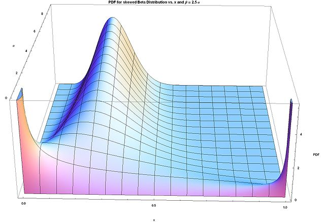
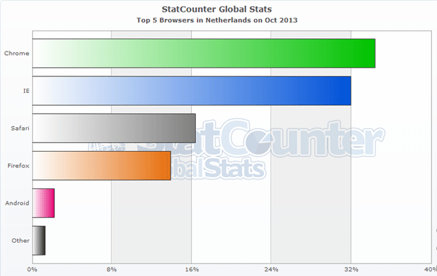
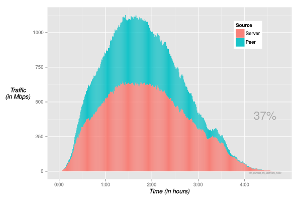
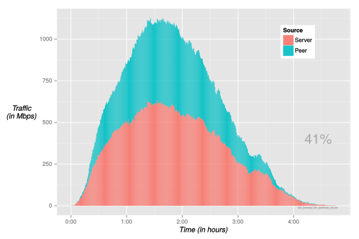
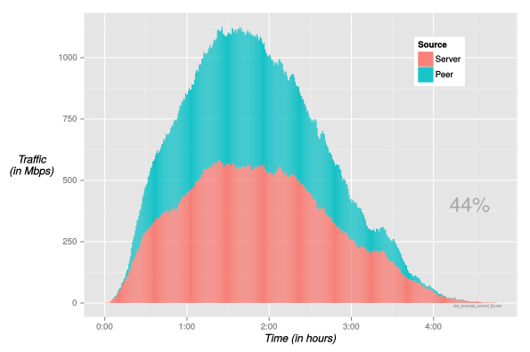

Peer-to-peer CDN
Dynamic peer-to-peer game networks using WebRTC
A CDN where the bandwidth cost is moved to clients, powered by WebRTC.
Examples are:
What kind of benefits are we looking at? Let’s find out with a simulation…
|
 |
Clients have a browser as per NL market Oct 2013:

Each client:



Point your browser to: demo.streamroot.io
10 weeks Bachelor project from TU Delft EWI conducted at TNO.
Jasper Abbink
Karens Grigorjancs
Joost Verdoorn
Dynamically scalable
(virtually) server-less (i.e. peer-to-peer)
In the browser
With WebRTC
Scalability of WebRTC peer to peer
Robustness: Recovery after unpredictable events
Bandwidth efficiency
Ease of Development (with a Proof of Concept)